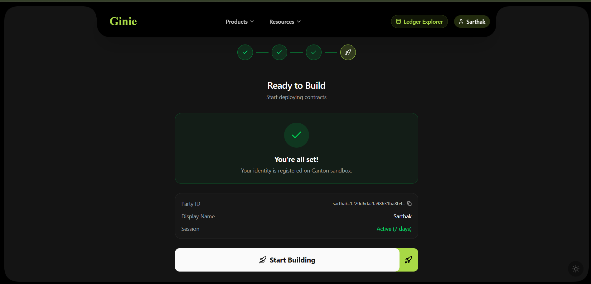
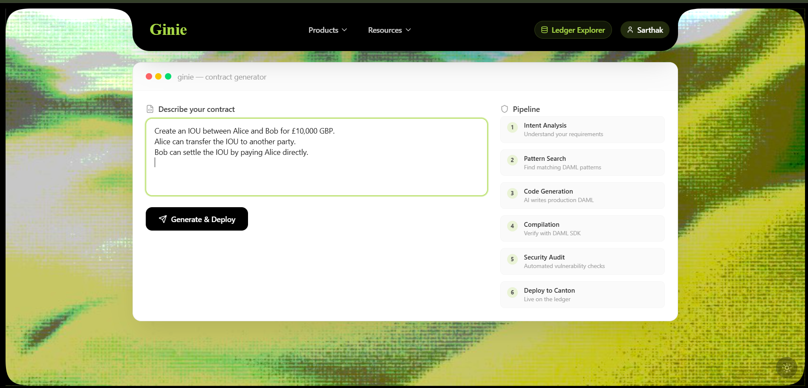
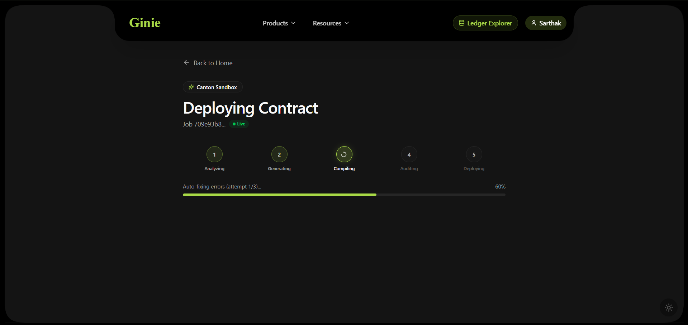
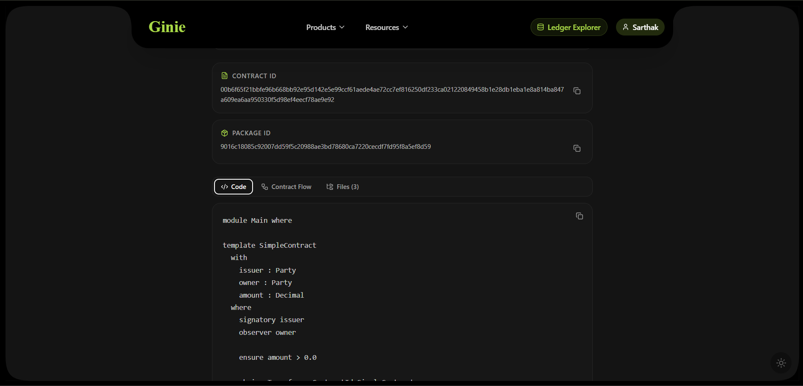

Quick Start
The fastest way to deploy a Canton contract is through the Ginie web interface. No account, no credentials, no Daml knowledge required.
/setup. Choose a party name — Ginie allocates a unique party ID on the Canton ledger. This step is one-time; your party persists across sessions.

Create an IOU between Alice and Bob for £10,000 GBP. Alice can transfer the IOU to another party. Bob can settle the IOU by paying Alice directly.
dpm build, runs the security audit, and deploys. If compilation needs fixing, the Fix Agent handles it automatically (up to 3 retries).


Using the Python SDK
pip install ginie
from ginie import GinieClient client = GinieClient(api_key="your-key") result = client.deploy( prompt="Create an IOU between Alice and Bob for £10,000", ledger="ginienet" # or "localnet", "mainnet" ) print(result.contract_id) # #1:00:abc3d7...f92a print(result.cantonscan_url) print(result.audit_report) # Full 5-gate audit findings
Core Concepts
What Ginie is
Ginie is an AI pipeline that accepts plain English descriptions and produces deployed Canton smart contracts. It is not a code editor. It is not an AI assistant. It is a fully automated deployment system where the output is a live Contract ID on a Canton ledger — not code to copy-paste.
GinieNet
GinieNet is a public Canton sandbox operated by BlockX AI. Any user can deploy contracts to GinieNet without DevNet credentials or a Canton account. Every Contract ID on GinieNet is real — verifiable on CantonScan. GinieNet is intended for prototyping and evaluation.
Daml and Canton — brief context
Daml is a smart contract language built for financial workflows. Canton Network is the blockchain that runs Daml contracts. Normally, writing and deploying a Daml contract requires learning Daml (a Haskell-derived language with strict type rules and party semantics), installing the Canton SDK, and running several CLI commands. Ginie handles all of this for you.
Key terms
| Term | What it means in Ginie context |
|---|---|
| GinieNet | Public Canton sandbox at canton.ginie.xyz — free to use, no sign-up |
| Contract ID | The live on-ledger identifier returned after successful deployment (#1:00:abc3d7…) |
| DAR | Daml Archive — the compiled artifact uploaded to the Canton Ledger API |
| dpm | Digital Asset Package Manager — the official Canton SDK CLI tool Ginie uses to compile |
| SCU | Smart Contract Upgrade — Canton's on-chain upgrade mechanism; Ginie enforces compatibility by default |
| Audit Layer | Ginie's 5-gate pre-deployment security scan run on every generated contract |
| Canton Skills | The npm knowledge base Ginie's agents use internally — also available standalone via npx canton-skills install |
The Daml SDK Ginie uses
All contracts are compiled with Canton SDK 3.4 using dpm build and dpm test — the official Digital Asset package manager. The Canton JSON Ledger API (port 7575) handles deployment. Every generated daml.yaml targets Canton SDK 3.4.